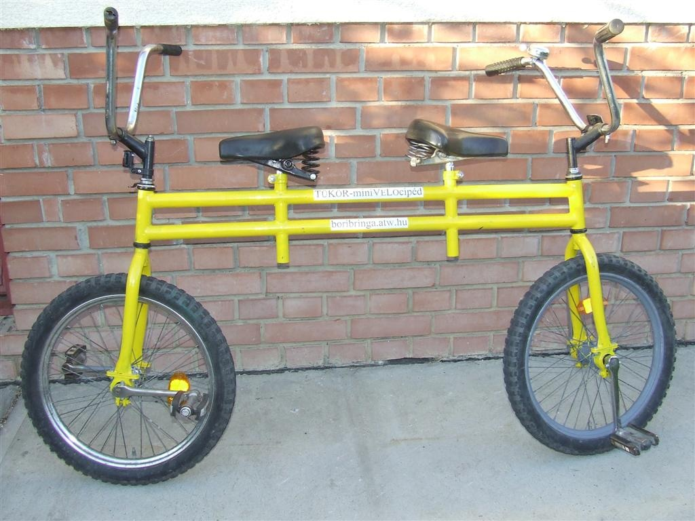
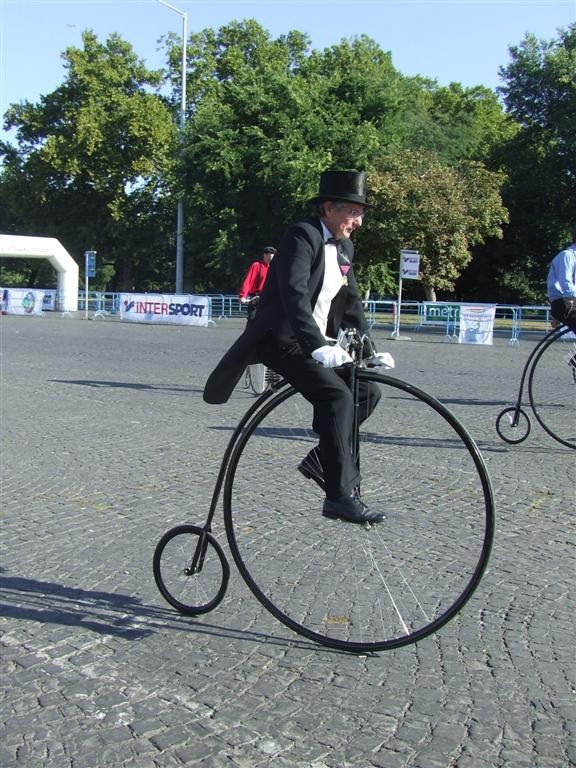
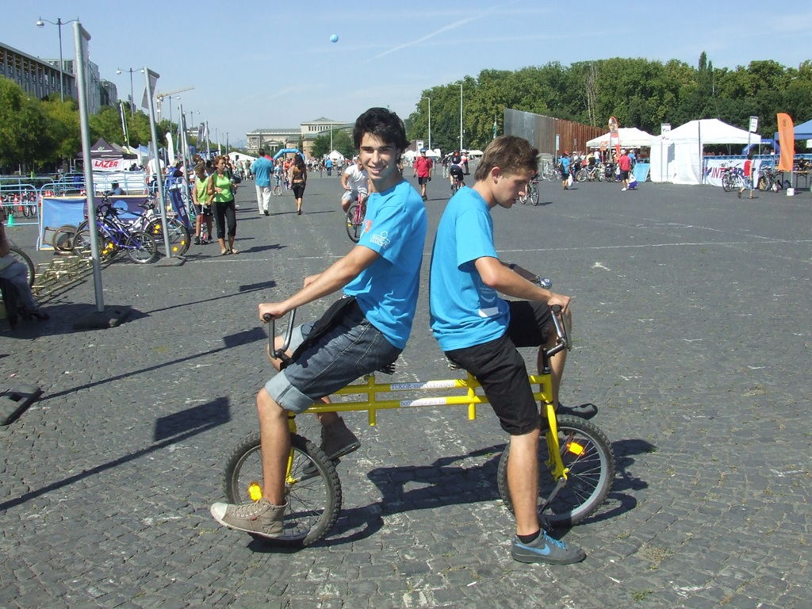
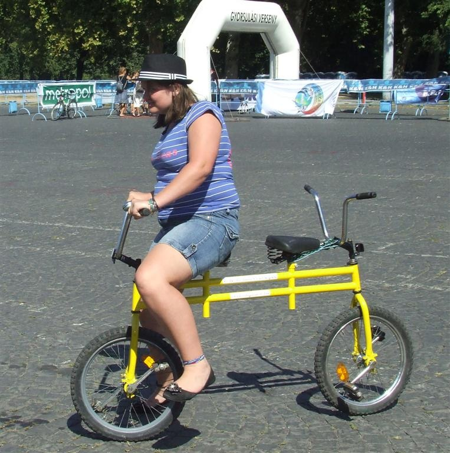

Magyar szóhasználattal a velocipéd a mai biciklik őse, olyan kerékpár, amelyen még nem volt láncáttétel, hanem az első kereket hajtották és kormányozták.

A nagyobb elérhető sebesség érdekében a hajtott kereket a lehető legnagyobbra készítették.
Ez a bringa mini velocipéd, mert a hajtott kereke csak 20 collos, nem is lehet vele nagy sebességet elérni.
A tükör megoldásnak megfelelően a kialakítása szimmetrikus, lényegében egy különleges tandemről van szó.
A bringán helyet foglaló két utas megegyezés alapján tetszés szerint bármelyik irányba elindulhat.

Az elől ülő normál irányba tekeri a pedálokat, és kormányoz. A hátul ülő feladata, hogy egyenesben tartsa a saját kerekét, és a normál hajtásiránnyal ellentétesen tekerje a pedálokat.
A tükör-minivelocipéddel egyedül is lehet haladni, ekkor célszerű a hátsó kereket mozgató kormányt rögzíteni.

Artista tehetséggel bíró biciklisek egyedül hátrafelé tekerve és kormányozva is haladhatnak a tükör-minivelocipéddel.